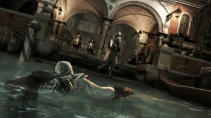
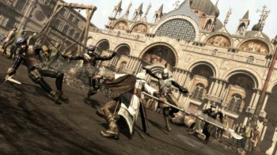
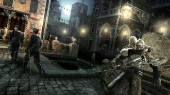

Родился Эцио в 1459 году в семье Джованни и Марии Аудиторе.
С раннего детства его воспитывали как банкира и уже в юности Эцио
доверяли различные задания как от его учителя, так и от самого Джованни.
Юношество Эцио проходило беззаботно до тех пор, пока его семью не придают.
В этот момент раскрывается, что отец Эцио - ассасин и из-за этого семья
Аудиторе подверглась предательству.После того, как Отца и других членов семьи Эцио
казнят, он, убив предателя, сбегает с матерью и сестрой к дяде Марио, который помогает
ему отомстить за смерть близких, попутно обучая его боевому мастерству.
Узнав о собрании заговорщиков причастных к казни семьи Аудиторе, Эцио отправляется и
убивает их. Эцио помогает дяде Марио освободить один из городов.
После этих событий Эцио сближается с Леонардо да Винчи и отправляется в Венецию, где
помогает ордену ассасинов справиться с тамплиерами. Там же Эцио заполучает в свои руки
яблоко Эдема и вступает в орден.В дальнейшем Эцио, помогая Катерине Сфорце освободить её
пленённых детей, получает рану из-за которой теряет сознание и упускает из рук яблоко.
Последнее подбирает некий монах и скрывается.В дальнейшем Эцио ищет монаха,
чтобы вернуть яблоко, попутно восстанавливая мощь братства ассасинов в Испании.
После этого Эцио находит монаха, убивает его и с яблоком
отправляется в сокровищницу. Войдя в неё Эцио, получает странное
послание от древней Предтечи - Минервы После своих приключений эцио отдыхает в Монтериджони,
где на его компанию происходит покушение. В результате Чезаре Борджиа убивает дядю Марио,
а Эцио получает ранение. После восстановления Эцио совместно с Николо Макиавелли
начинает свергать строй Борджиа и попутно объединяе т против последнего существующие
гильдии (попутно эцио обучает новобранцев и создает свою небольшую, но смертоносную армию).
После этого Эцио отправляется на штурм крепости Чизаре. Сын Борджиа убивает своего отца.
Эцио гонится за ним и с помощью яблока уничтожает остатки армии Борджиа,
а самого Чизаре арестовывают. Через время Чизаре сбегает из тюрьмы, но долго существовать
ему не пришлось. Эцио настигает Борджиа и убивает его.После вышеописанных событий Эцио решает
пойти по стопам Альтаира и пытается найти 5 печатей, которые Николо Поло по приказу альтаира спрятал
в Константинополе. Попутно Эцио помогает местному ордену и принцу Сулейману с некоторыми делами.
Найдя все печати родственник Сулеймана принц Ахмет пленит возлюбленную Эцио и заполучает все печати,
но в дальнейшем отец Сулеймана убивает Ахмета, и все печати возвращаются к Эцио.
Эцио открывает библиотеку Альтаира и обнаруживает его труп и яблоко Эдема. После этого Эцио уходит на покой.
В 1524 году Эцио селится во Флоренции. У него растут дочка и сын.
Но внезапно домой к старому Эцио приходит китайский ассасин Шао Цзюнь, которая просит Эцио укрыть её.
Последний соглашается и Шао становится охранником семьи Эцио.Позже Шао Цзюнь покидает Эцио со шкатулкой,
которую он ей вручил незадолго до этого. Через время Эцио идет с семьей на рынок, садится на лавку и к
нему подсаживается человек. Последний берет Эцио за руку и отравляет его с помощью клинка с ядом.
Эцио смотрит в последний раз на свою семью, улыбается и умирает...
Название: Assassin's Creed 2
Год выпуска: 2010
Жанр: RPG, Action, 3D, 3rd Person, Stealth
Разработчик: Ubisoft
Издательство: Ubisoft / Акелла
Платформа: PC
Тип издания: RePack
Язык интерфейса: Русский
Язык озвучки: Русский
Таблетка: Не требуется
Описание: Assassin's Creed 2 - сиквел успешного экшена про убийцу.
На этот раз действие происходит в Италии, 1476 год. Играя за дворянина
из Флоренции, вам будет предложено выполнить различные задания. Главный
герой теперь может плавать. В арсенале вы сможете найти: топор, молот,
булаву, копья, 2 различных меча, алебарду и 2 небольших клинка. Но враги
в Assassins Creed 2 тоже не лыком шиты. Лучники, тяжелая пехота с мощной
броней и двуручными мечами или топорами, алебардщики и другие солдаты станут
серьезной преградой для выполнения заданий. Всего в игре будет 16 типов
уникальных типов заданий, исключая всякую элементарщину вроде карманных краж
и подслушивания. Помимо реальных мест в Assassins Creed 2 присутствуют исторические
персонажи: Макиавелли, Катерина Сфорца, Лоренцо Медичи. Собирая различные скрытые
объекты, вы сможете получить интересные бонусы и достижения.
Системные требования:
Операционная система: Windows XP / Windows Vista / Windows 7 / 8 / 10
Процессор: Intel Core 2 Duo 2.8 GHz or AMD Athlon X2 Dual-Core 5200+
Оперативная память: 1 Гб (Windows XP) / 2 Гб (Windows Vista / Windows 7)
Видеокарта: Nvidia Geforce 9800 или Radeon HD 4750
Звуковая карта: Звуковое устройство, совместимое с DirectX® 9.0с
Свободное место на жестком диске: 6 Гб
Особенности игры:
- Эцио, новый ассасин для новой эры. Юный итальянский аристократ в поисках отмщения;
- Великолепие Италии эпохи Ренессанса. Путешествие по самым прекрасным городам мира во
времена, когда высочайшие произведения культуры и искусства рождались на фоне процветавшей
коррупции, ненасытной жадности и многочисленных убийств;
- Новая степень свободы. Открытый мир, в котором наряду с полной свободой перемещения
появились такие новые черты, как плавание и даже полеты;
- Динамическая толпа. Откройте для себя живой, дышащий мир, где каждый
персонаж несет для игрока те или иные возможности;
- Станьте профессиональным тайным убийцей. Совершенствуйте свои навыки,
учитесь ловко обращаться с различными мечами и шпагами, скрытно
передвигаться, обезоруживать врагов и использовать их
собственное оружие против них, поражать противника,
используя потайные клинки и смертельные яды.
Особенности RePack:
Ничего не вырезано / не перекодировано
Версия игры: 1.01
Вшиты все DLC
DLC:
Гробница Аудиторе(на Вилле)
Улучшенная сумка для ножей (25 ножей)
Убежища Тамплиеров.
Одежда Альтаира.
Вшит Update от Cleric[V]
Время установки ~15мин
RePack от R.G. ReCoding


